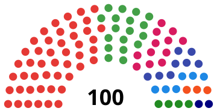
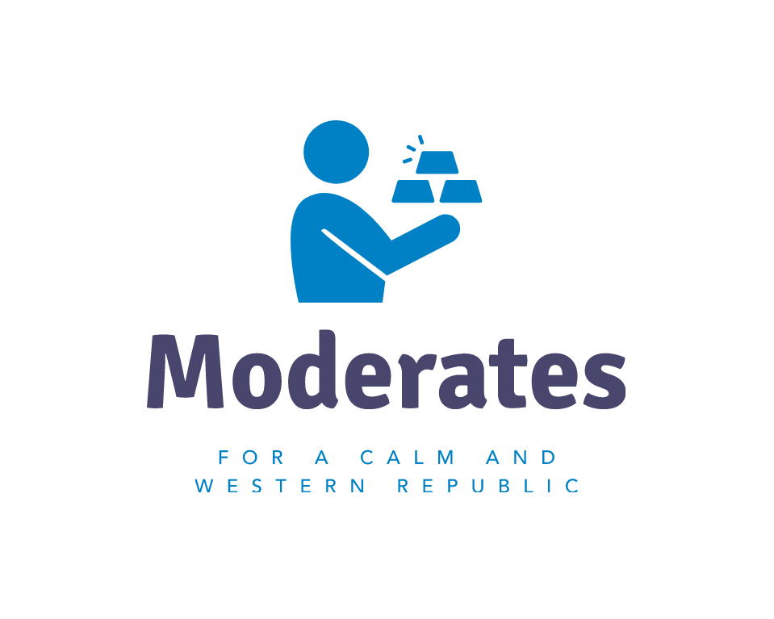
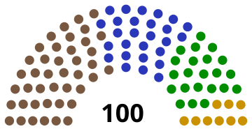

The Current National Council (2025)

| Logo | Party | Representation | Coalition | Ideologies | Position |
|---|---|---|---|---|---|
| Humanist Socialist Party | 47% | Humanist Socialism, Libertarian Municipalism, Technocracy, Mutualism | Radical-Left to Far-Left | ||
| Environment and Justice | 18% | Eco-Socialism, Social Ecology, Green Politics | Center-Left to Left-wing | ||
| Democratic Socialists | 12% | Democratic Socialism, Marxism, Syndicalism | Left-wing to Radical-Left | ||
| National Traditionalists | 8% | Traditionalism, Monarchism, Protectionism, Nationalism, Right-Wing Populism | Right-wing to Far-right | ||
| Movement for Democracy in the Republic of Fluid | 6% |  |
Neoliberalism, Classical Liberalism | Center-Right to Right-wing | |
| Highlands Federation | 4% | Regionalism, Patriotism, Environmental Protection, Rural Development | Center-Right to Left-wing | ||
| Social Democrats | 3% | Social Democracy, Reformism, Liberalism | Center to Center-Left | ||
| Docklands Alliance | 2% | Regionalism, Internationalism, Maritime Economy, Coastal Development | Center-Left to Left-wing |
First National Council (1895)

| Party | Representation | Coalition | Ideologies |
|---|---|---|---|
| Unionist Party | 42% | The People | Industrialism, Syndicalism |
| Scientific Party | 27% | The People | Technocracy, Mutualism |
| Agrarian Party | 22% | The People | Agrarianism, Environmentalism |
| Youth Party | 9% | The People | Youth Politics |